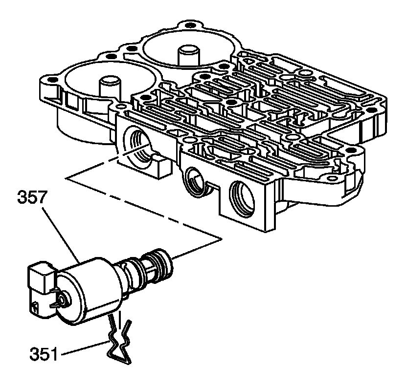
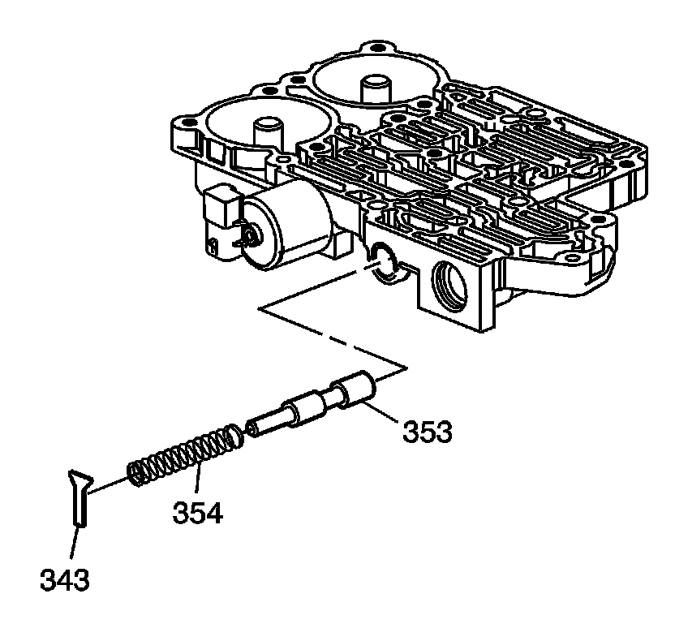
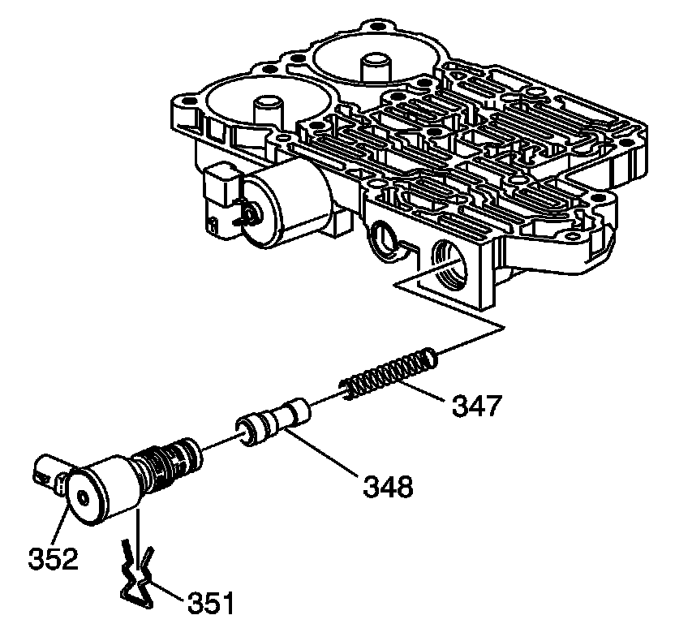
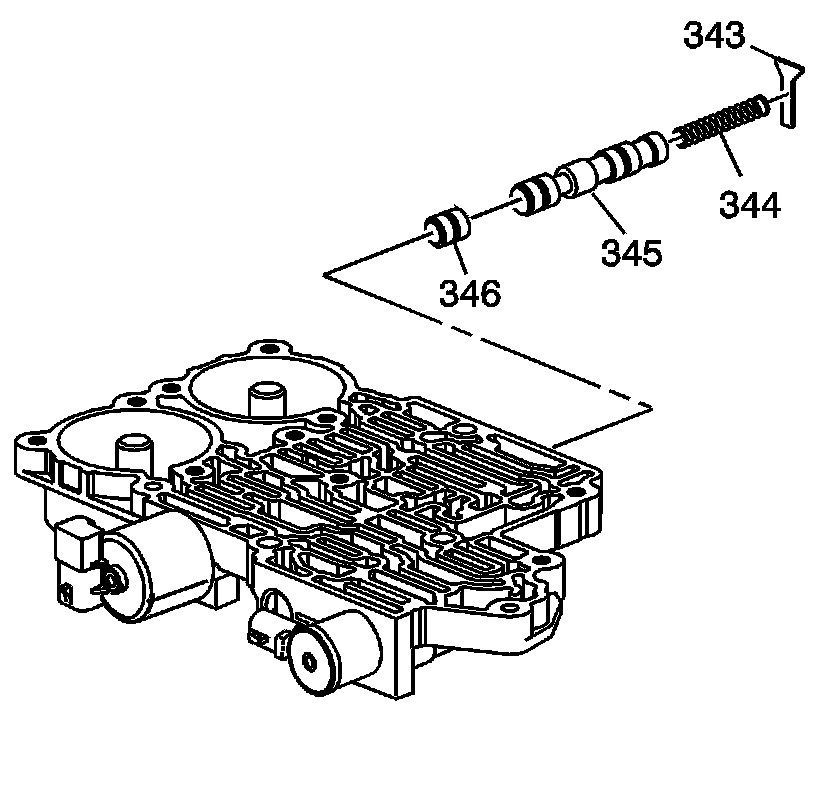
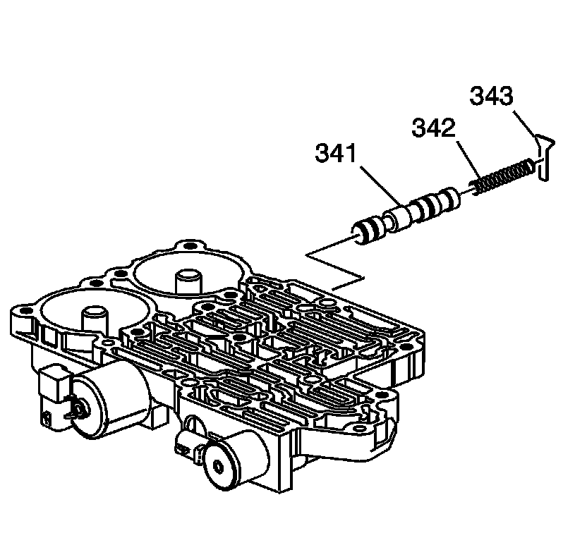

Control Valve Front Body Assemble
Control Valve Front Body Assemble

1. Install the pressure control solenoid (357).
2. Install the pressure control solenoid retainer (351).

3. Install the feed limit valve (353).
4. Install the feed limit valve spring (354).
5. Install the feed limit valve retainer (343).

6. Install the tcc pwm solenoid valve spring (347).
7. Install the tcc regulator apply valve (348).
8. Install the tcc pwm solenoid (352).
9. Install the tcc pwm solenoid retainer (351).

10. Install the 3-4 shift control valve (346).
11. Install the 3-4 shift valve (345).
12. Install the 3-4 shift valve spring (344).
13. Install the 3-4 shift control valve retainer (343).

14. Install the safety mode valve (341).
15. Install the safety mode valve spring (342).
16. Install the safety mode valve retainer (343).